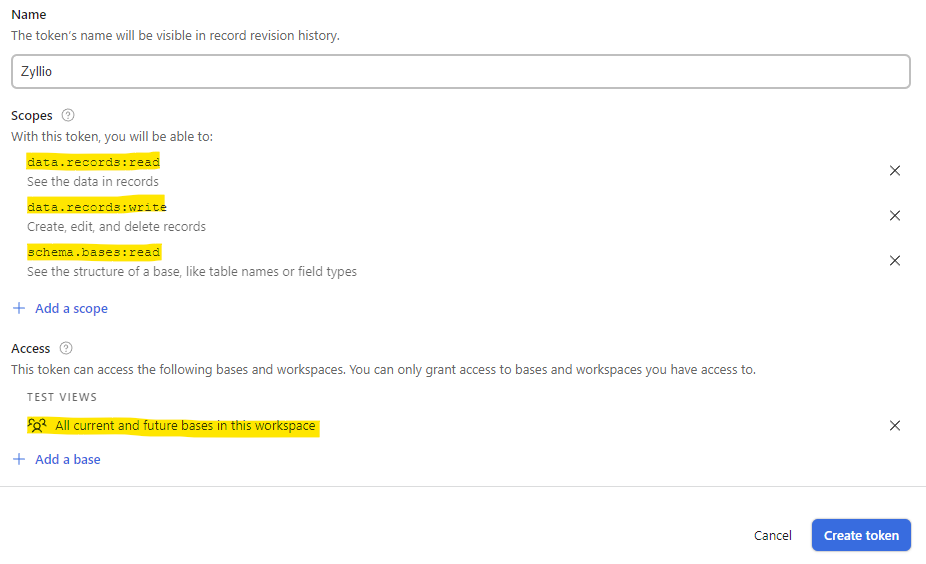
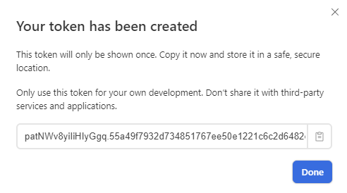
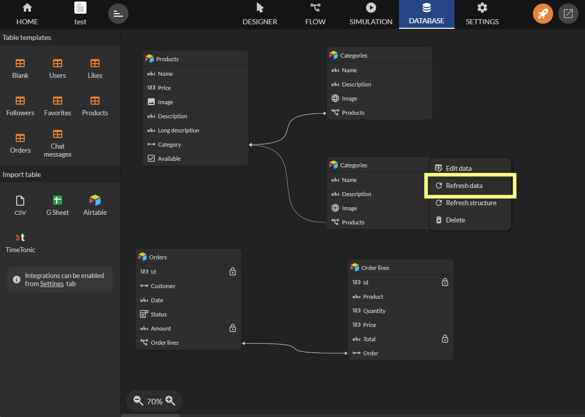

Airtable
Zyllio vous permet de connecter facilement vos bases de données Airtable à une application mobile sans avoir besoin de connaissances en programmation. Grâce à cette intégration, vous pouvez accéder, visualiser et interagir avec vos données Airtable en temps réel, directement depuis votre application.
Configuration
Airtable Configuration
Before you start importing your Airtable tables and views, you need to set up the Airtable integration. Here are the steps to follow:
- Log in to your Airtable account.
- Access the integration settings from the Builder Hub section of your account.

- Then select the Personal access tokens option from the left menu.
- Click on the Create new token button.

- Enter a name, for example: Zyllio.
- Then select the following scopes:

- Validate the creation of the token.
- Once created, click the Copy button to copy the token.

Once this dialog box is closed, Airtable will no longer display the token. You will need to generate another one to obtain it.
Zyllio Configuration
- Log in to Zyllio.
- Select the application to integrate with Airtable.
- Select the Settings tab, then Airtable.
- Enable the Airtable integration.
- Paste the token copied from the Airtable portal as follows:
Importing Airtable Tables and Views
From the Database tab, click on the Airtable option in the Import table section on the left.

Then select the table(s) to import. This operation can be repeated to import additional tables later.

Once confirmed, Zyllio imports all the selected tables along with their field types and relationships. For example, five imported tables with relationships.

Calculated fields such as formulas, lookups, rollups, and IDs are indicated with a lock icon. These fields cannot be modified from Zyllio.
Adjustments are sometimes necessary to provide Zyllio with more information about the field type. For example, the Image field in the Products table is of type Link since Airtable defines the type as Attachment. To indicate that this attachment is an image, simply change its type from Zyllio. This way, the Image field will be automatically selected by Zyllio in its components.
Using Tables in the Mobile Application
Once the tables and views are imported, you can use the data from the screen editor. From the Design tab, create a screen by selecting an Airtable table as illustrated.

Structure Synchronization
When you make structural changes in your Airtable tables, such as adding a field, these changes will not appear in Zyllio. To synchronize these changes, click the Refresh Structure button. Once the synchronization process is initiated, Zyllio will add and remove fields based on the changes.
Zyllio does not modify the structure of Airtable tables in your Airtable account. Only the Zyllio definition can be modified from within Zyllio.

Data Synchronization
Zyllio implements a data cache to improve access performance to Airtable based on the usage of Airtable tables. As a result, changes made from Airtable or external automation may not be immediately visible in Zyllio. A delay of up to 1 minute may be necessary. To force a refresh, click the Refresh Data button.
